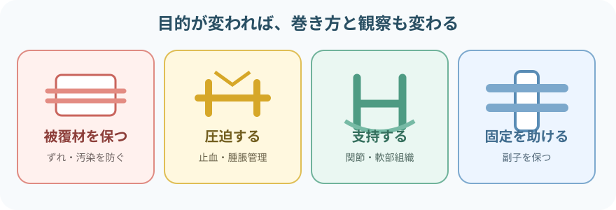
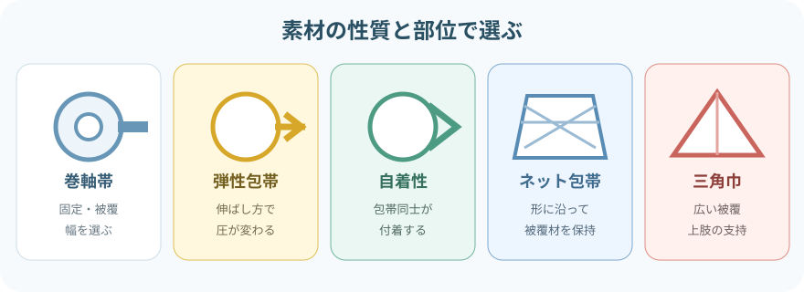
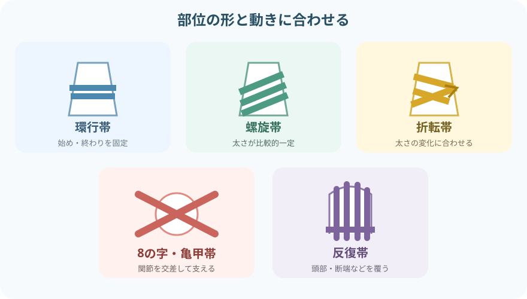
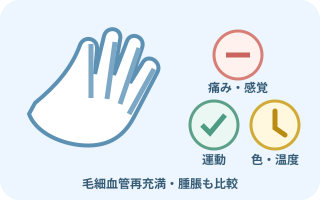
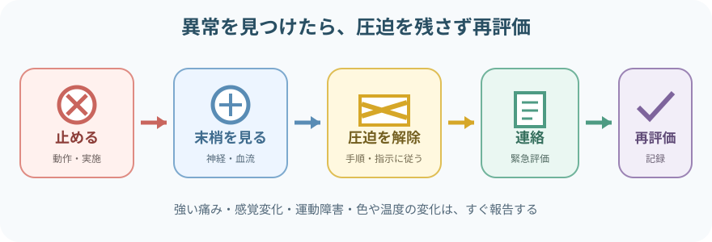

注意事項
巻く前の状態を残す
- 痛み、しびれ、運動、皮膚色、温度、毛細血管再充満、腫脹を確認する
- 四肢は可能な範囲で左右差と本人の基準値を比べる
- 創、出血、皮膚障害、感染兆候、アレルギー、骨折・脱臼の疑いを確認する
- 固定目的、関節肢位、露出して観察する末梢部位を決める
異常があれば「様子を見る」だけにしない
- 予想以上に強い痛み、他動運動で増える痛み
- しびれ、感覚低下、指趾が動かしにくい
- 蒼白・チアノーゼ、冷感、毛細血管再充満の遅れ
- 包帯の上下に増える腫脹、食い込み、出血・浸出液の急な増加
包帯の役割を分ける

- 被覆材を保つ：創面に直接触れる材料をずれにくくする
- 圧迫する：止血や腫脹管理など、指示された圧を患部へ伝える
- 支持する：関節や軟部組織を支え、動作時の負担を減らす
- 固定を助ける：副子や保護材を所定の位置に保つ
包帯は創面へ直接当てる材料とは限らない。創には目的に合う被覆材を置き、その上から包帯で支持・固定する。
材料を選ぶ

- 巻軸帯：被覆材や副子の固定に用いる。部位に合う幅を選ぶ
- 弾性包帯：伸ばし方で圧が変わる。巻いている間も緊張を一定にする
- 自着性包帯：包帯同士が付着する。重なりや引き伸ばしすぎに注意する
- ネット包帯：頭部・関節などで被覆材を保持しやすい。サイズと食い込みを確認する
- 三角巾：広い範囲の被覆や上肢の支持に使える。結び目の圧迫を避ける
巻き方を使い分ける

- 環行帯：同じ場所へ重ねて巻く。巻き始め・巻き終わりの固定に使う
- 螺旋帯：前の層へ幅の1/2〜1/3ほど重ねながら進む。太さが比較的一定の部位に使う
- 折転帯：途中で折り返し、太さの変化へ合わせる。下腿や前腕などに使う
- 8の字帯・亀甲帯：交差させながら関節を包む。関節の屈側へ厚い重なりを集中させない
- 反復帯：折り返しを繰り返して先端を覆う。頭部や断端などに使う
重ね幅は学習上の目安。包帯の伸縮性、製品表示、固定目的、部位、患者の状態に合わせる。
包帯法の手順
- 目的と指示を確認する
何を覆う・圧迫する・支える・固定するのか、交換時期と観察方法を確認する。
- 説明し、安楽な体位を整える
患部を支え、固定後に必要な関節肢位を保つ。プライバシーと保温にも配慮する。
- 皮膚・創と末梢神経血管を観察する
痛み、感覚、運動、皮膚色、温度、毛細血管再充満、腫脹を基準として記録する。
- 被覆材・保護材を置く
創面を清潔に扱い、骨突出部や皮膚がこすれる場所を必要に応じて保護する。
- 包帯を皮膚に沿わせて巻く
巻軸を患部の近くで転がし、しわ・ねじれ・局所的な締め付けを作らない。各層の緊張と重なりをそろえる。
- 安全な場所で固定する
創、骨突出部、圧が集中する場所を避けて留める。テープや留め具を皮膚へ食い込ませない。
- 直後と経過中に再評価する
巻く前と同じ項目を比べ、ずれ、緩み、浸出、におい、皮膚障害も確認する。
四肢へ巻くとき
- 支持・圧迫を目的とする場合は、一般に末梢側から中枢側へ均一に進める
- 指趾など観察に必要な末梢部を可能な範囲で露出する
- 包帯の端だけで輪状に強く締めず、段差と食い込みを作らない
- 骨折・脱臼が疑われる部位を無理に動かさず、固定の指示を優先する
巻いた後の観察

包帯の外にある指趾から変化をつかむ
- 痛み：強さ、部位、増え方、他動運動との関係
- 感覚：しびれ、ピリピリ感、触れた感覚の左右差
- 運動：指趾を自分で動かせるか
- 灌流：皮膚色、温度、毛細血管再充満、必要時は脈拍
- 局所：腫脹、食い込み、ずれ、出血、浸出液、皮膚障害
異常時の考え方

- 実施や活動を止め、患肢を支えて全身状態を確認する
- 痛み、感覚、運動、皮膚色、温度、毛細血管再充満、腫脹を再評価する
- 院内手順と指示に従い、包帯を緩める・外すなど圧迫を解除する
- 医師・担当者へすぐ報告する。外傷後の強い痛みや神経血管変化は緊急評価につなげる
- 改善の有無を確認し、時刻、所見、対応、再評価を記録する
報告・記録
- 実施目的、部位、創・皮膚の状態、使用した被覆材・包帯・固定具
- 実施前後の痛み、感覚、運動、皮膚色、温度、毛細血管再充満、腫脹
- 巻き方、固定した肢位、末梢部の露出、患者の訴え
- 出血・浸出液、ずれ、緩み、食い込み、皮膚障害の有無
- 患者へ説明した異常徴候、再確認時刻、交換予定、報告と対応